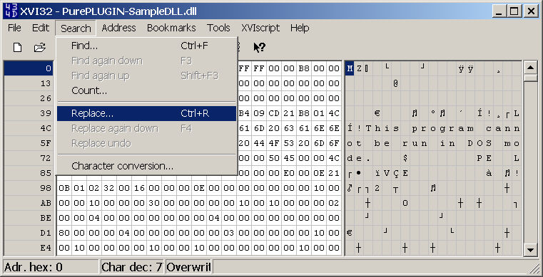
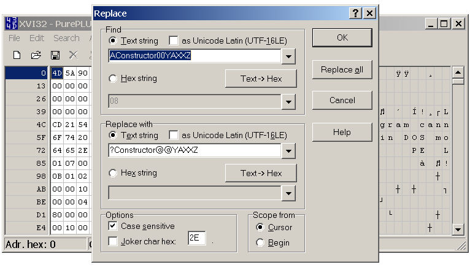

How to build your own TPC Plugin with PurePLUGIN.
You'll have to follow this procedure to be sure that your plugin may work
correctly:
1. TPC Project Setup:
a. Create a new directory inside the "PurePLUGIN Development" directory
b. Copy files from "PurePLUGIN Development\PurePLUGIN-SampleDLL"
inside your new project directory.
2. Create the DLL itself:
Now you'll have to create your new commands.
We advice you to separate various command set in PB include files like shown
in the DLL sample.
You'll have to use ProcedureCDLL for each procedure you want to be
exposed and that will be used to create a new command/function.
You'll have to use Procedure for each internal procedure that will
not be exposed and that will not be used to create a new command/function.
!!! WARNING !!!
Don't forget to insert your ID codes in the AConstructor00YAXXZ procedure
to allow the plugin to be initialized by PurePLUGIN.dll .
You can get a more detailled free tutorial on how to create DLL using PureBASIC
on an old TheGameCreators newsletter.
Tutorial is available here:
http://www.thegamecreators.com/data/newsletter/newsletter_issue_22.html#17
3. Add the string table in your DLL to create the DarkBASIC Professional
new commands/functions sets.
Simply open a resource editor like Resource hacker and follow the explanations
given here.
Save changes to your DLL to be sure that the String Table are integrated in
to create commands/functions.
If you need more resources, simply create new ones using the explanations
given here.
4. Create the Constructor procedure.
PureBASIC can't create decorated functions/procedure. That's why we'll have
to do changes ourselves.
DarkBASIC Professional can only handle decorated
a. Open an HEX EDITOR(like XVI32
used for this sample).
.b open your DLL with menu FILE / OPEN FILE.
c. open menu SEARCH / REPLACE like shown in the picture below:

In the replace window, we'll have to make the constructor function use decorated
form.
You'll have to choose the string to change : AConstructor00YAXXZ
Replace with : ?Constructor@@YAXXZ
Like shown in the picture below:

Once these strings are entered, click on "OK".
The HEX EDITOR will make the changes and you constructor function is now :
?Constructor@@YAXXZ
It can now be used internally by DarkBASIC Professional to initialize your
plugin.
5. You can now copy your TPC DLL directly inside the DarkBASIC Professional/Compiler/Plugins-User
directory.
Your plugin is now ready to be used inside DarkBASIC Professional to create
new commands/functions sets.